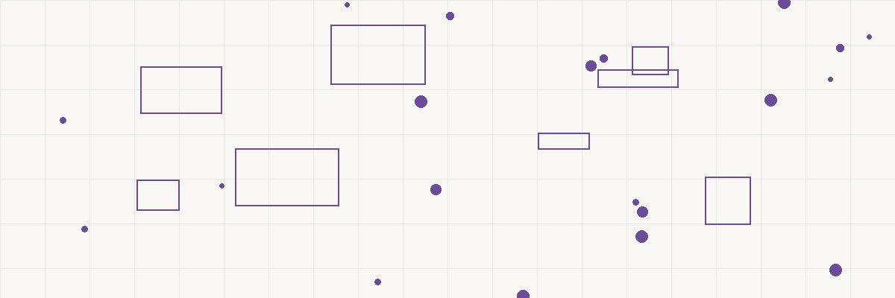

PORTFOLIO LOSS HARVEST THE OFFSET GAINS (Paper → Realized) LOSS & INCOME ───────────────── ═══════════════════ ───────────────── • Stock A down 30% ──╲ ╱── • Offset cap gains • Loss is "paper" ───╲┌──────────┐╱─── • $3K vs. ordinary until you sell ────╳│ SELL + BUY │╳──── income/year • Sell to realize ───╱└──────────┘╲─── • Carry forward • Buy similar (NOT ╱ ╲ unlimited losses substantially • Maintain exposure identical) WASH SALE RULE: ALLOWED: RESULT: ───────────────── ═══════════════════ ───────────────── • Can't buy same • Sell Vanguard S&P • Tax loss: $30K security within Buy Fidelity S&P • Offset $30K gains 30 days before/ • Sell AAPL • Net tax saved: after the sale Buy tech sector ETF ~$7,140 at 23.8% • "Substantially • Sell bond fund • Portfolio stays identical" = NO Buy diff duration fully invested ──────────────────────────────────────────────── THE MATH: $100K invested → drops to $70K → sell → realize $30K loss Buy similar fund same day → stay invested $30K loss offsets $30K in gains elsewhere Tax saved: $30K × 23.8% = $7,140 — and portfolio unchanged
FADE IN: A calm financial planning office. MARGARET KWAN (55, Certified Financial Planner, unflappable) faces her client DEREK CHEN (40s, tech worker, sweating through a market downturn). DEREK I'm down $80,000 this year. My portfolio is getting destroyed. Should I just sell everything and go to cash? MARGARET (steady) No. But I want you to sell some things. Not because you're panicking — because those losses are VALUABLE. They're a tax asset sitting in your portfolio, and every day you don't harvest them is a day you're leaving money on the table. DEREK My losses are... valuable? MARGARET They're worth about $19,000 in tax savings right now. And I'm going to show you how to capture that money WITHOUT changing your investment strategy at all.
MARGARET Right now your losses are "paper" losses. They exist on your screen but not on your tax return. The IRS doesn't care about paper losses. They only recognize REALIZED losses — which means you have to sell. DEREK But if I sell, I lock in the loss permanently. MARGARET Common misconception. You sell the losing position, realize the loss for tax purposes, and immediately buy a SIMILAR investment. Your portfolio exposure stays virtually identical. You stay fully invested. The only thing that changes is: you now have a tax deduction. She draws a timeline: MARGARET (CONT'D) Monday 9:30 AM: Sell $100K position in Vanguard Total Stock Market Index Fund (VTSAX). Down 30%. Realized loss: $30,000. Monday 9:31 AM: Buy $70,000 of Fidelity Total Market Index Fund (FSKAX). Same broad market exposure. Different fund company. DEREK Same day? That works? MARGARET Same minute if you want. The key is: you sold VTSAX and bought FSKAX. They track the same market. But they're not the same security. And that distinction matters enormously.
MARGARET Section 1091 — the Wash Sale Rule — says you cannot deduct a loss if you buy a "substantially identical" security within 30 days before or after the sale. That's a 61-day window: 30 days before, the sale day, and 30 days after. DEREK What counts as "substantially identical"? MARGARET Same security. If you sell Apple stock on Monday and buy Apple stock on Tuesday — wash sale. Loss is disallowed. If you sell Vanguard's S&P 500 fund and buy Vanguard's S&P 500 ETF (same underlying holdings, same manager) — the IRS will likely consider that substantially identical. She lists what's safe: MARGARET (CONT'D) But if you sell Vanguard's S&P 500 fund and buy Fidelity's S&P 500 fund? Different fund, different manager, different CUSIP number. NOT substantially identical. Loss is valid. Sell an individual stock and buy a sector ETF that contains it? Valid. You sold Apple and bought the Technology Select Sector SPDR. Different security. DEREK So I can maintain almost identical market exposure? MARGARET Almost identical, yes. The IRS allows you to stay invested in the same MARKET — just not the same SECURITY. That's the game.
MARGARET Let's look at your actual portfolio losses. She pulls up his account: MARGARET (CONT'D) International fund: bought at $50K, now worth $35K. Loss: $15,000. Tech individual stocks: bought at $80K, now worth $52K. Loss: $28,000. Bond fund: bought at $30K, now worth $27K. Loss: $3,000. Small cap fund: bought at $40K, now worth $31K. Loss: $9,000. Total harvestable losses: $55,000. DEREK And what does that save me? MARGARET First, those losses offset your capital gains. You sold some winners earlier this year — $35,000 in long-term gains. The first $35,000 of losses offset those gains dollar for dollar. At 23.8% (20% cap gains + 3.8% NIIT): that's $8,330 in tax savings. Remaining losses: $20,000. Of that, $3,000 offsets ordinary income this year — at your 35% marginal rate, that's another $1,050. The remaining $17,000 carries forward to next year and beyond — forever, until used. DEREK So I save about $9,380 THIS year, with $17K banked for future years? MARGARET And your portfolio is in the same investments, tracking the same markets. You just got a tax refund for free.
DEREK What about the 30-day rule going backward? You said 30 days BEFORE the sale too. MARGARET Right. If you bought additional shares of the same security within 30 days before your sale, that triggers a partial wash sale. The most common trap: automatic dividend reinvestment. DEREK (groaning) My funds auto-reinvest dividends. MARGARET Exactly. If your Vanguard fund distributed and reinvested a dividend on December 1, and you try to harvest the loss on December 15, those reinvested shares within 30 days create a partial wash sale for that portion. She shows the fix: MARGARET (CONT'D) Solution: turn off automatic reinvestment in any fund you plan to harvest BEFORE you sell. Let dividends accumulate as cash. Then sell the full position. No wash sale complication. DEREK Do I turn reinvestment back on after? MARGARET In the NEW fund — yes. FSKAX replaces VTSAX, and FSKAX can auto-reinvest from day one. You only need to pause reinvestment in the fund you're about to sell.
MARGARET Here's the modern evolution. Companies like Betterment, Wealthfront, and even Fidelity now offer automated tax-loss harvesting. The algorithm monitors your portfolio daily and harvests losses automatically whenever positions dip below their cost basis. DEREK Every single day? MARGARET Every day the market is down is a potential harvesting opportunity. And small frequent harvests add up to more than one big annual harvest. Research from Betterment suggests automated daily harvesting can add 1-2% to after-tax returns annually. She explains: MARGARET (CONT'D) The algorithm sells the losing lot, buys the substitute, holds the substitute for 31 days, then swaps back to the original fund if it's still preferred. Continuous rotation. Continuous tax alpha. DEREK Should I use one of those robo-advisors? MARGARET If your portfolio is relatively simple — index funds and ETFs — an automated harvester is worth considering. For complex portfolios with individual stocks, restricted shares, or concentrated positions, you still want a human making those decisions. The wash sale rules get tricky with options, RSUs, and ESPP shares. DEREK I have RSUs from work. MARGARET Then we're doing this manually. Your RSU vesting dates interact with the 30-day windows in ways that algorithms often don't handle correctly.
MARGARET One of the most underappreciated features of tax-loss harvesting: unused losses carry forward FOREVER. There's no expiration. DEREK Seriously? No time limit? MARGARET None. If you harvest $100,000 in losses during a major crash, you can use $3,000 per year against ordinary income plus unlimited amounts against capital gains — for the next thirty years if needed. She draws a timeline: MARGARET (CONT'D) Say the market crashes and you harvest $100K in losses this year. Over the next decade, as you sell winners or rebalance, those carried-forward losses keep offsetting gains. It's like having a tax savings account that you built during the downturn and withdraw from during the recovery. DEREK So a bad year for my portfolio can be a good year for my taxes? MARGARET Some of my wealthiest clients have carryforward loss balances of $500K or more from 2008-2009. They've been harvesting those losses against gains for fifteen years. Every time they rebalance or take profits, the loss carryforward absorbs the tax. It's an enormous structural advantage. DEREK I wish I'd done this during COVID... MARGARET March 2020 was one of the greatest harvesting opportunities in history. A 30% drop and recovery within months. Anyone who harvested in March and bought back similar funds immediately captured losses that will save them taxes for a decade — while their portfolio recovered fully.
MARGARET Let me give you the mistakes to avoid. One: harvesting in a retirement account. IRAs and 401(k)s don't generate taxable gains or deductible losses. Harvesting inside them does nothing. Only taxable brokerage accounts benefit. Two: forgetting about spousal accounts. If you sell a stock and your spouse buys the same stock within 30 days — wash sale. The rule applies across ALL accounts you or your spouse control, including IRAs. DEREK Even my IRA? MARGARET If you sell Apple in your taxable account to harvest a loss, and your IRA buys Apple within 30 days — even through automatic rebalancing — the loss is permanently disallowed. Not deferred. Permanently gone. It's one of the harshest interpretations of the wash sale rule. She holds up three fingers. MARGARET (CONT'D) Three: triggering short-term gains on the replacement. If you buy the substitute fund and sell it within a year, any gain is taxed at short-term rates (up to 37%) instead of long-term rates (20%). Make sure you hold the replacement for at least a year before swapping back. Four: over-harvesting and resetting your basis too low. Every time you harvest and buy at the lower price, your cost basis resets lower. If markets recover, you'll eventually have larger gains when you sell. You're not eliminating tax — you're deferring it. But deferral IS valuable because of time value of money.
MARGARET Here's your harvesting calendar going forward. She pulls up a year view: MARGARET (CONT'D) Quarterly: I review your portfolio for harvestable positions. Any lot down 10% or more gets flagged for potential harvest. October-November: the big push. We look at your year-to-date gains and estimate your tax liability. Then we harvest enough losses to offset those gains plus the $3,000 ordinary income deduction. December: final sweep. Last chance to realize losses before the tax year closes. But watch the settlement date — trades must SETTLE by December 31, which means executing by approximately December 27-28. DEREK And the rest of the year? MARGARET Opportunistic harvesting during market drops. COVID crash in 2020, rate scare in 2022, any 10%+ correction — those are harvesting events. I'll reach out proactively when they happen. She makes a note. MARGARET (CONT'D) One more thing: I'm turning off dividend reinvestment in your three largest taxable positions today. We'll harvest those this week while the losses are available. Markets can recover fast — we don't want to miss the window.
Derek looks at his portfolio with new eyes. The red numbers that were making him sick now look like opportunities. DEREK So my $80K loss isn't just pain — it's a $19,000 tax asset? MARGARET Think of it this way: the market gave you lemons. Tax-loss harvesting turns them into lemonade. You stay fully invested for the recovery, and you get a tax benefit that partially compensates you for the downturn. It doesn't eliminate the loss — but it softens the blow by 20-25%. She shakes his hand. MARGARET (CONT'D) IRC Section 1091 — the Wash Sale Rule — is the boundary. Everything inside that boundary is fair game. Sell losing positions, buy similar but not identical replacements, stay invested, and capture the tax benefit. The code explicitly permits it. The IRS explicitly accepts it. And every year you don't do it is money you're donating to the Treasury for no reason. DEREK (calmer now) I actually feel better about this downturn. MARGARET Good. That's the right frame. A disciplined investor sees opportunity in every market condition — up markets grow your wealth, down markets grow your tax assets. Both have value. She turns to her computer and starts executing the trades. Derek watches the red numbers on his screen — not with dread anymore, but with purpose. FADE OUT. — END —